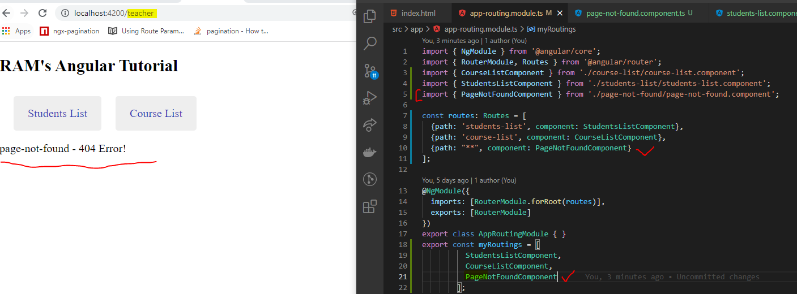
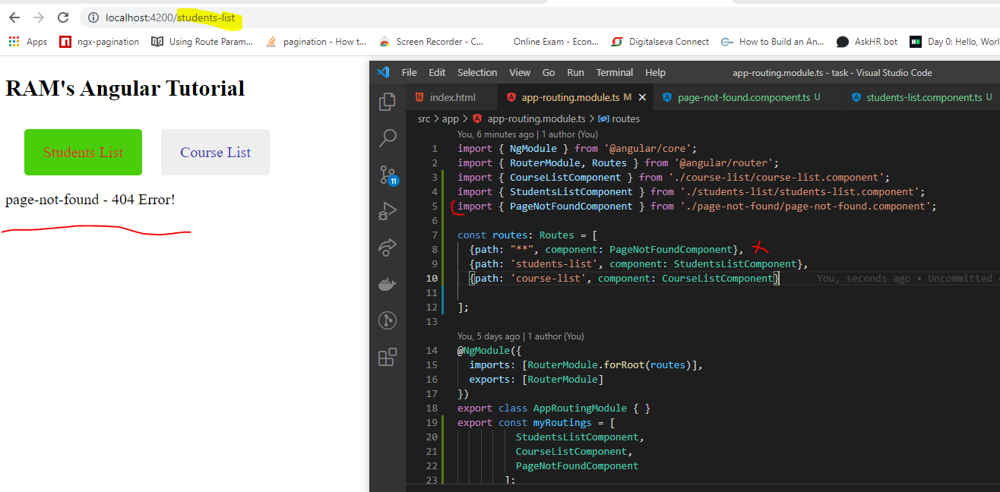
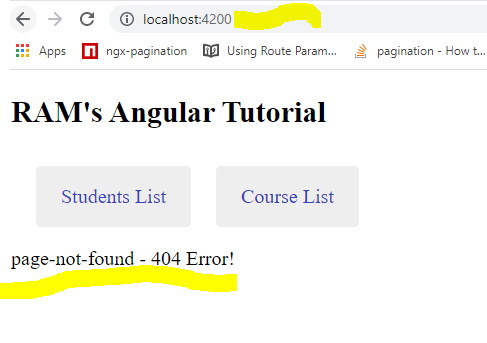
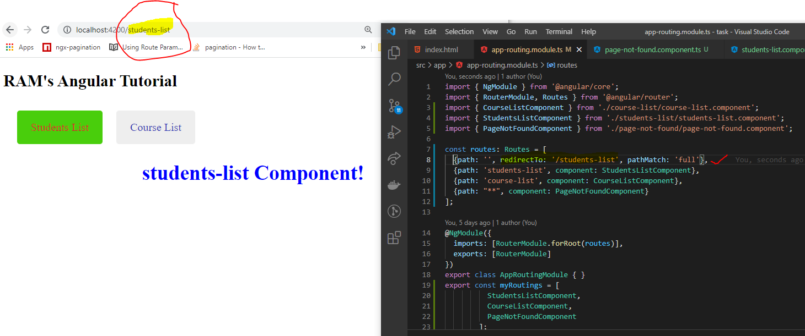

Wildcard Routs and Re-Directions
- In general, while route the any of unknown component (Not available component) at that time in console showing the error, but user not understanding what's happened .
- So, these cases we have to use the wild card routs and redirect to page not found message on view page.

- Always, wildcard routs was added end of the routes only. because, I have add the wildcard route to top of the routes, at that time it is showing as "Page not found - 404 Error" only.

- We can see, once up the angular application in locally at that time it is running on localhost:4200.
For this case it is not having any path so it is through error, to avoid we need to set the empty path and redirect to required components like below.

